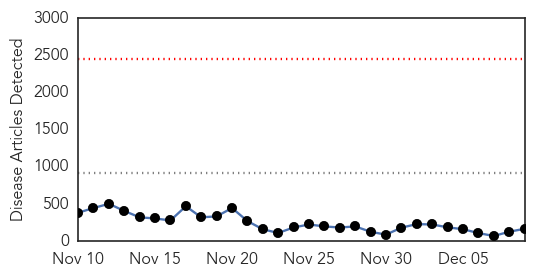

Ebola
30-Day Web Trend
0 alerts, 0 warnings

30-Day Twitter Trend
0 alerts, 0 warnings

Article Locations
Article Confidences

Top Articles:
- 1.000
- Airport screenings haven't turned up any Ebola patients
- 1.000
- Liberia wants to eradicate Ebola before 2015
- 1.000
- Health workers on Ebola response frontlines get boost with donation of protective gear ' UN
- 1.000
- Airport screenings haven't turned up any Ebola patients
- 1.000
- Sierra Leone criticises Save the Children's running of Ebola centre
- 1.000
- No Confirmed Ebola Cases in US, but Virus Still Rages in Sierra Leone
- 1.000
- COMMENTARY: When the next shoe drops — Ebola crisis communication lessons from October
- 1.000
- U.S. Ebola survivor reveals identity, says he's grateful
- 1.000
- Is Governments Penchant for Spin, Hurting the Fight to Defeat EVD?
- 0.999
- Ebola still spreading in western Sierra Leone, Guinea's forest
- 0.999
- US Ebola survivor can't remember 3 weeks
- 0.999
- Ebola still 'flaming' in parts of Sierra Leone, Guinea – UN
- 0.999
- Ebola still 'flaming' in parts of Sierra Leone, Guinea: U.N.
- 0.999
- Sierra Leone Docs Continue Strike Over Ebola Care
- 0.999
- NHS Staff leave for Sierra Leone - Sierra Leone
- 0.999
- At home and cured of Ebola, Cuban doctor vows return to Africa
- 0.999
- State trains its rapid response team to handle Ebola patients
- 0.998
- UN: Ebola still spreading in western Sierra Leone, northern Guinea
- 0.998
- Arrival of Ebola patient causes no unrest in 'well prepared' Netherlands: media
- 0.998
- Malaria deaths have fallen but WHO warns resources are diverted to fight Ebola
- 0.998
- Dallas doctor explains why he sent first U.S. Ebola patient home - National
- 0.997
- UMass Medical chool leading drive to reopen Liberian hospitals in wake of Ebola
- 0.997
- Ebola still 'flaming' in parts of Africa
- 0.997
- Bothell firefighter returns home after fighting Ebola in West Africa
- 0.997
- Ebola Still 'Flaming' in Parts of Sierra Leone, Guinea — Naharnet
- 0.997
- US Airports Screened 2,000 Travelers for Ebola, But Found No Cases
- 0.996
- Malaria death rates fall, Ebola threatens West Africa progress
- 0.996
- Responding to Ebola’s Long-Term Threat to Development
- 0.996
- UPDATE 2-Ebola still spreading in western Sierra Leone, Guinea's forest - U.N.
- 0.995
- ESU grads help fight Ebola in Liberia
- 0.995
- Ebola: UN envoy says intense response needed for western Sierra Leone and Guinea-Mali border
- 0.995
- Strike over inadequate Ebola equipment
- 0.995
- Christian Aid partners train volunteers to offer psychosocial care to Ebola-hit communities - Sierra Leone
- 0.995
- Sierra Leone overtakes Liberia in Ebola cases
- 0.995
- 104 medics to boost AU Ebola fight « Awoko Newspaper
- 0.994
- Namibia encourages volunteers to Ebola-hit W/Africa
- 0.994
- FACTBOX-How Ebola spreads and started
- 0.993
- Epidemics public health Ebola
- 0.993
- Regular press briefing by the Information Service - Ebola Response, 9 Dec 2014 - Sierra Leone
- 0.993
- EU Commissioner Mimica announces new support for fighting Ebola during visit to Guinea
- 0.992
- Ebola Cases Are Down, So Should Liberians Stop Worrying?
- 0.990
- With schools closed in Liberia, education nonprofit joins Ebola battle
- 0.990
- With schools closed in Liberia, education nonprofit joins Ebola battle
- 0.990
- Fear and hope at a Sierra Leone Ebola center
- 0.989
- Sierra Leonean docs strike again over Ebola care
- 0.989
- Junior doctors in Sierra Leone strike over lack of Ebola care
- 0.989
- Recruits sought for Sierra Leone Ebola mission
- 0.989
- Japan presents 20,000 sets of PPEs to UNMEER to fight Ebola
- 0.989
- Junior doctors in Sierra Leone strike over lack of Ebola care : World, News
- 0.989
- Ebola death toll rises to 6,331: WHO
Showing top 50 articles...
Top Tweets:
- 0.979
- Flu and Ebola have some similar symptoms, but flu is common in the U.S., while Ebola is very rare. http://t.co/E7rp64rK4Z NIVW2014
- 0.908
- RT: Sierra Leone overtakes Liberia in number of Ebola cases: WHO http://t.co/uqrarRMnqY
- 0.900
- RT: Ebola what a number - takes 300 people to staff a 50-bed Ebola Treatment Unit and Time! Dangerou…
- 0.822
- Ebola outbreak could reverse malaria gains in West Africa's Pedro Alonso tells parliamentarians at report launch. endmalaria
- 0.799
- RT: Sierra Leone MOH Ebola Update Dec 8: 58 New Conf. Cases & 41 Susp.; 26 New Conf. Deaths http://t.co/2qZALjK5Er
- 0.798
- WHO | Sierra Leone: Ebola expert patients have much to teach http://t.co/GRBsknPoqa StopEbola
- 0.766
- Fake death certificates hasten Ebola's spread in Liberia, Sierra Leone http://t.co/1oC2n1e7TK
- 0.750
- RT: Sierra Leone doctors strike for better Ebola care http://t.co/9IHeRxCFdb
- 0.748
- RT: SierraLeone overtakes Liberia in number of Ebola cases: WHO http://t.co/oVUPbVyGEd
- 0.747
- RT: Ebola in Sierra Leone kills doctors, executives http://t.co/mAdIb2WYHY
- 0.742
- When hit by global health emergencies, like Ebola, Africa is lacking infrastructure Dr Nafo-Traoré, @RollBackMalaria endmalaria
- 0.735
- RT: Rapid Assessment of Ebola Infection Prevention and Control Needs — 6 Districts, Sierra Leone: http://t.co/418VYWUWxx
- 0.722
- .@bihi_selow The 2 Ebola vaccines currently being tested in people are in trials in the US. Assume 3 will too. Announcement is re: vaccine
- 0.720
- Comprehensive programs to reduce risk for Ebola among health care workers in Sierra Leone are needed. http://t.co/0A9P8b3XyC
- 0.703
- The Ebola crisis continues to devastate the westafrican region.SierraLeone has surpassed liberia in case numbers. http://t.co/ew0CSFhyxO
- 0.700
- Sierra Leone's junior doctors strike, after three doctors died from Ebola in recent days http://t.co/XCWXGWtUT6
- 0.698
- The growth in reported Ebola cases in Sierra Leone is definitely slowing, albeit still large. But is this real or a reporting artifact?
- 0.686
- Welcoming guests to Malaria Report, @JeremyLefroyMP - "ebola outbreak has shown us that there is no room for complacency" endmalaria
- 0.683
- Ebola diary: tackling the virus in Sierra Leone day-by-day http://t.co/aLpQlmyb99 TackleEbola http://t.co/LsLXu0mCV1
- 0.651
- RT: Ebola in Sierra Leone: Doctors go on strike over inadequate equipment http://t.co/l3X6Dpp50S
- 0.643
- Bribes are being accepted to void Ebola death certificates in Sierra Leone, says Laurie Garrett http://t.co/GCm7GXQC3I
- 0.616
- RT: Ebola in Sierra Leone: An eyewitness account http://t.co/ppnasLcyi2
- 0.571
- RT: Ebola still spreading in western Sierra Leone, Guinea's forest: U.N, http://t.co/10x2tenRQt
- 0.554
- The Ebola crisis continues to devastate the westafrican region. SierraLeone has now surpassed… http://t.co/WBi7ln3xVJ
- 0.545
- RT: Exactly 4 months after WHO declared Ebola a PHEIC, first Norwegian g'mental HCWs on site in Sierra Leone http://t.co/UVpPhW…
- 0.531
- RT: [GUARDIAN] Doctor treated at British-run Ebola military clinic in Sierra Leone dies http://t.co/FTl9r5meMG EbolaNews
Pertussis
30-Day Web Trend
1 alerts, 0 warnings

30-Day Twitter Trend
0 alerts, 0 warnings

Article Locations

Article Confidences
Top Articles:
- 0.909
- Keep your germs at home, please
- 0.858
- Whooping Cough Outbreak at Massachusetts High School Affected Only Vaccinated Students
- 0.794
- Whooping cough outbreak sickens 10,000 in California
- 0.700
- Whooping Cough Back With a Vengeance in California
- 0.562
- Requiring vaccinations for all who have contact with newborns is on the rise
Top Tweets:
-
No tweets found for Dec 09, 2014